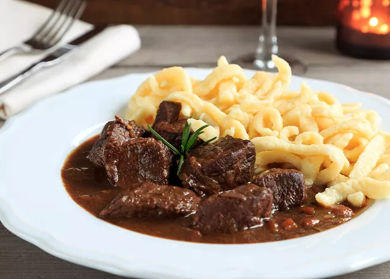

Goulash Recepie

This Hungarian-style goulash is a thick beef stew that is great served over buttered noodles and garnished with sour cream.
Ingredients:
- 2 ½ pounds boneless beef chuck roast, cut into 2-inch cubes
- salt and ground black pepper to taste
- 2 tablespoons vegetable oil
- 2 onions, chopped
- 2 teaspoons olive oil
step-by-step
- Season beef with salt and black pepper. Heat vegetable oil in a large skillet over high heat; cook and stir beef in hot oil in batches until browned on all sides, about 5 minutes per batch. Transfer to a large stockpot and reserve drippings in the skillet.
- Return skillet to medium heat; stir onions into the reserved drippings, drizzle olive oil over onions, season with 1/2 teaspoon salt and cook until onion has softened, about 5 minutes. Transfer to the stockpot with beef.
- Combine paprika, caraway seeds, black pepper, marjoram, thyme, and cayenne pepper in the skillet and toast over medium heat until fragrant, about 3 minutes. Add 1 cup chicken broth and stir; transfer to the beef and onion mixture.
- Stir 3 cups chicken broth into beef mixture. Add tomato paste, garlic, vinegar, sugar, 1/2 teaspoon salt, and bay leaf; place stockpot over high heat and bring to a boil. Reduce heat to low and simmer until a fork inserts easily into the meat, 1 1/2 to 2 hours.